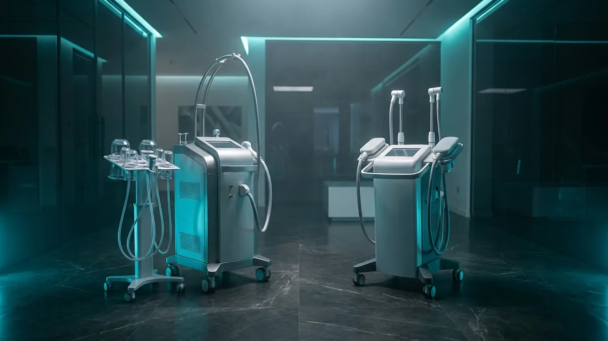

Soğuk lipoliz mi, HI-EMT mi? Vücut şekillendirmede doğru hat
Vücut şekillendirme tek bir başlık gibi görünür, ama arkasında birbirinden bağımsız fizik prensipleri vardır. Soğuk lipoliz yağ hücresini, HI-EMT kas dokusunu hedefler; radyofrekans, vakum ve endolazer ise bambaşka katmanlarda çalışır. Cihaz seçerken doğru soru "hangisi daha güçlü" değil, "işletmemin karşıladığı talep hangi dokuya ait" sorusudur. Bu yazı mekanizmaları, seans yükünü ve kabin ekonomisini işletme gözüyle karşılaştırıyor.

Soğuk lipoliz: yağ hücresine yönelen kontrollü soğutma
Kriyolipoliz, adipoz dokudaki lipidlerin çevre dokulara kıyasla daha yüksek sıcaklıkta faz değiştirmesi ilkesine dayanır. Sistem, deri, damar ve sinir dokusunu koruyan bir sıcaklık penceresinde çalışacak şekilde tanımlanır. Aplikatör dokuyu vakumla kavrar; ısı transferi temas plakaları üzerinden gerçekleşir ve termistör verisi ile sürekli izlenir. Hedeflenen etki, soğutulan bölgedeki yağ hücrelerinin apoptoz yolağına girmesi ve içeriğin zaman içinde vücudun kendi metabolik yollarıyla uzaklaştırılmasıdır.
Bu mekanizmanın işletme açısından en kritik özelliği zaman gecikmesidir. Seans biter bitmez gözle görülür bir değişim beklenmez; süreç haftalar boyunca ilerler. Dolayısıyla müşteri beklentisinin ilk görüşmede doğru kurulması ve takip randevusunun protokole baştan yazılması gerekir.
Aplikatör geometrisi de en az cihaz gövdesi kadar belirleyicidir. Karın, flank, iç bacak, kol ve submental bölge farklı kavis ve vakum hacimleri ister. Satın alma değerlendirmesinde aplikatör setinin kapsamı, tek kullanımlık membran/jel pedin tedarik sürekliliği ve eş zamanlı çalışabilen aplikatör sayısı sorulmalıdır. Estezone portföyünde EsteSlim ve EsteSlim Mix bu ailede konumlanır.
HI-EMT: kas dokusunu hedefleyen elektromanyetik uyarım
HI-EMT (yüksek yoğunluklu odaklanmış elektromanyetik alan) teknolojisi tamamen farklı bir fizik üzerine kuruludur. Hızla değişen manyetik alan, indüksiyon yoluyla doku içinde akım oluşturur; bu akım motor nöronu depolarize ederek iradi kasılma eşiğinin üzerinde, sürekli bir kas kasılması meydana getirir. Isı ya da soğuk temelli bir etki değildir; hedef doku yağ değil, çizgili kastır.
Uygulama biçimi de bu yüzden farklıdır. Aplikatör kayışla sabitlenir, çoğu sistemde giysi üzerinden temassız çalışır ve seans boyunca operatörün cihaz başında el hareketi yapması gerekmez. Bu, kabin planlamasında ciddi bir fark yaratır — aşağıdaki operatör dakikası bölümünde bunu ayrıştırıyoruz.
Cihazın frekans ve yoğunluk protokolleri, aplikatörün gövde ya da uzuv için tasarlanmış olmasına göre değişir. Üreticinin kullanım kılavuzundaki kontrendikasyon listesi (implant, metal, ritim düzenleyici vb.) personel eğitim dosyasına birebir aktarılmalı ve ön değerlendirme formuna işlenmelidir. Estezone portföyünde EsteSculpt Pro bu kategoridedir.
Radyofrekans, vakum ve endolazer: aynı başlık, farklı katmanlar
Radyofrekans, dokunun elektriksel direnci nedeniyle ortaya çıkan dielektrik ısınmayı kullanır. Monopolar, bipolar veya çok kutuplu düzenlerde enerjinin yayıldığı derinlik ve alan değişir. Vakum eklendiğinde doku başlığa çekilerek enerji dağılımı ve mekanik etki birlikte yönetilir; LLLT (düşük seviyeli lazer) ise foto-biyomodülasyon ekseninde ayrı bir bileşen olarak konumlanır. Estezone portföyünde T-Shape 2 ve RFYNE bu grupta yer alır.
Endolazer ise kategorik olarak diğerlerinden ayrılır. Fiber optik kanülün cilt altına yerleştirilmesiyle enerji doğrudan subdermal katmana iletilir; kullanılan dalga boyları su ve yağ kromoforları tarafından farklı oranlarda soğurulur. Bu bir girişimsel işlemdir ve hekim yetkisi gerektirir.
Bu ayrım, cihaz seçiminin ilk filtresi olmalıdır. Güzellik salonu ve güzellik merkezi ruhsatıyla çalışan bir işletme ile poliklinik veya hastane bünyesindeki bir birimin kullanabileceği cihaz kümesi aynı değildir. Yetki sınırınızı netleştirmeden teknoloji karşılaştırmasına girmek, kullanılamayacak bir yatırımla sonuçlanabilir.
Karşılaştırma: teknoloji, hedef doku ve işletme yükü
Aşağıdaki tablo, dört ana yaklaşımı hedef doku ve operasyonel yük ekseninde özetliyor. Seans süreleri cihaz modeline, aplikatör sayısına ve üreticinin tanımladığı protokole göre değiştiği için tablo yalnızca yük tipini gösterir; kesin süre için cihazın kendi kullanım kılavuzu esastır.
| Teknoloji | Hedef doku ve mekanizma | Seans yükü / operatör | İşletme notu |
|---|---|---|---|
| Soğuk lipoliz (kriyolipoliz) | Adipoz doku; kontrollü soğutma ile hücresel apoptoz yolağı | Uzun seans, aplikatör sabit; operatör kurulum ve sonlandırmada devrede | Sarf malzemesi (membran/jel ped) süreklilik ister; sonuç zamana yayılır, takip randevusu şart |
| HI-EMT | Çizgili kas; indüklenen akımla supramaksimal kasılma | Orta uzunlukta seans, temassız; operatör kurulumdan sonra serbest | Kabin döngüsü hızlı kurulur, sarf yükü düşük; ön değerlendirme formu kritik |
| Radyofrekans (+vakum / LLLT) | Dermis ve subkutan katman; dielektrik ısınma, mekanik doku yönetimi | El başlığı manuel hareket ister; operatör seans boyunca 1:1 bağlı | Operatör becerisine en duyarlı grup; eğitim ve standart protokol olmadan sonuç tutarsızlaşır |
| Endolazer | Subdermal katman; fiber ile iletilen lazer enerjisinin kromoforlarca soğurulması | Girişimsel işlem; hekim ve steril kurulum gerektirir | Yalnızca yetkili sağlık kuruluşu; ruhsat ve yetki sınırı ilk filtredir |
| Kombine protokol | Farklı dokular, ayrı seanslarda ya da ayrı günlerde | Randevu planlaması karmaşıklaşır | Cihazlar birbirini dışlamaz; sıralama üretici kılavuzuna göre kurulur |
Kabin matematiği: seans süresi değil, operatör dakikası
Cihaz karşılaştırmalarında en sık atlanan kalem, seansın kaç dakika sürdüğü değil, o seansın kaç dakika operatör tükettiğidir. Radyofrekans ve vakum tabanlı başlıklar seans boyunca elde tutulur; bir personel bir müşteriye bağlanır. HI-EMT ve soğuk lipoliz aplikatörleri ise sabitlendikten sonra izleme moduna geçer.
Bu fark, aynı metrekarede kurulabilecek iş modelini değiştirir. Sabit aplikatörlü sistemlerde bir personel, cihaz sayısı ve kabin düzeni izin verdiği ölçüde paralel oturum yönetebilir; el başlığıyla çalışan sistemlerde bu mümkün değildir. Yatırım kararını verirken kabin sayısı, personel sayısı ve haftalık çalışma saatinizi tabloya yazın; cihazın kapasitesini bu üç değişkenin en dar olanı belirler.
İkinci kalem sarf ve bakımdır. Soğutma sistemlerinde tek kullanımlık membran ve jel ped, RF başlıklarında iletken jel, tüm sistemlerde periyodik kalibrasyon ve teknik servis erişimi hesaba katılmalıdır. Yedek parça tedarik süresi, cihazın devre dışı kalacağı gün sayısını doğrudan belirler.
Kombine protokol kurmanın mantığı ve satın alma kontrol listesi
Farklı dokuları hedefleyen teknolojiler birbirinin alternatifi değil, çoğu zaman birbirinin tamamlayıcısıdır. Yağ katmanına yönelik bir sistemle kas dokusuna yönelik bir sistemi aynı hizmet menüsünde konumlandırmak, aynı müşteriye ikinci bir talep başlığı açar ve tek cihaza bağımlılığı azaltır. Ancak protokol sıralaması, bölge çakışması ve seans aralıkları üreticinin kılavuzu çerçevesinde kurulmalıdır; kendi başınıza sıra uydurmak hem teknik hem hukuki risktir.
Değerlendirme görüşmesine girmeden önce şu başlıkları netleştirmek, teklif aşamasını da kısaltır.
- İşletme türünüz ve ruhsat kapsamınız: hangi cihaz sınıfını kullanma yetkiniz var?
- Gelen talebin dağılımı: bölgesel kontur mu, kas tonusu mu, cilt sıkılığı mı ağır basıyor?
- Kabin ve personel sayısı: paralel oturum kurabilecek düzeniniz var mı?
- Aplikatör kapsamı: hangi bölgeler için hangi aplikatörler standart pakette, hangileri opsiyonel?
- Sarf malzemesi: tek kullanımlık parçaların tedarik süresi ve stok yükü nedir?
- Teknik servis: garanti kapsamı, arıza müdahale süresi, yedek parça erişimi.
- Eğitim: kurulum sonrası operatör eğitimi kaç gün, tekrar eğitimi var mı?
- Belgelendirme: cihazın ÜTS kaydı ve uygunluk belgeleri dosyada mevcut mu?
Özetle
Vücut şekillendirmede doğru hattı bulmanın yolu, teknolojileri güç sırasına dizmekten değil, hedef dokuya göre ayrıştırmaktan geçer. Soğuk lipoliz yağ hücresine, HI-EMT kas dokusuna, radyofrekans ve vakum ise dermis ile subkutan katmana yönelir; endolazer bunlardan ayrı bir yetki sınıfındadır. Karar verirken üç şeyi yazılı hale getirin: yetki kapsamınız, gelen talebin dağılımı ve kabin başına düşen operatör dakikası. Bu üç veri elinizde olduğunda cihaz seçimi teknik bir eşleştirmeye dönüşür. Estezone teknik ekibi, işletme düzeninizi dinleyip uygun konfigürasyonu birlikte çıkarmak üzere değerlendirme görüşmesine açıktır.
Sık sorulanlar
Soğuk lipoliz ile HI-EMT birbirinin alternatifi mi?
Güzellik salonu olarak hangi cihazları kullanabilirim?
Seans süresi ve kabin verimliliğini nasıl hesaplarım?
Bu cihazların fiyatları nedir?
İlgili platformlar
Yazıda anlatılan teknik kalemleri gerçek cihazlar üzerinde görün.

EsteSlim
4 Farklı BaşlıkYağ hücrelerini dondurarak apoptoza uğratır; üç ayrı başlık boyutuyla farklı bölgelere uyum sağlar.

EsteSculpt Pro
7 Tesla · 3000 WHI-EMT kas uyarımını radyofrekansla birleştirir; tek seansta hem yağ hem kas hedeflenir.

T-Shape 2
5 Teknoloji Bir AradaBipolar RF, LLLT lazer, dinamik vakum, mesosporasyon ve mesosphere tek platformda; FDA 510(k) belgeli.
Bu yazıdaki hesabı kendi işletmeniz için yapalım
Cihaz seçimi, servis kapsamı ve yatırım geri dönüşü — kendi rakamlarınızla oturup konuşalım.
Ankara ve İstanbul ofislerimizden aynı gün dönüş yapılır.